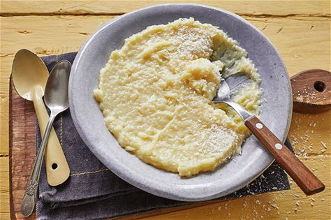

Bolo simples
Ingredientes:
2 xícaras (chá) de açúcar,
3 xícaras (chá) de farinha de trigo,
4 colheres (sopa) de margarina,
3 ovos,
1 e 1/2 xícara (chá) de leite,
1 colher (sopa) bem cheia de fermento em pó.
Modo de preparo:
Passo 1: Bata as claras em neve e reserve.
Passo 2: Misture as gemas, a margarina e o açúcar até obter uma massa homogênea.
Passo 3: Acrescente o leite e a farinha de trigo aos poucos, sem parar de bater.
Passo 4: Por último, adicione as claras em neve e o fermento.
Passo 5: Despeje a massa em uma forma grande de furo central untada e enfarinhada.
Passo 6: Asse em forno médio 180 °C, preaquecido, por aproximadamente 40 minutos ou ao furar o bolo com um garfo, este saia limpo.
Brigadeiro
Ingredientes
1 lata de leite condensado,
1 colher de sopa de manteiga ou margarina,
2 colheres de sopa de chocolate em pó,
Chocolate granulado (para guarnição).
Modo de Preparo
Passo 1: Misture o leite condensado com a manteiga (ou margarina) e o chocolate em pó.
Passo 2: Leve ao fogo, mexendo sempre, até desprender-se totalmente da panela (10 minutos).
Passo 3: Retire , passe para um prato untado com manteiga e deixe esfriar.
Passo 4: Enrole em forma de bolinhas, passe-as pelo chocolate granulado e coloque-as em forminhas de papel.
Beijinho de colher
Ingredientes
1 lata de leite condensado,
1 pacote de coco ralado,
1/2 colher de margarina,
1/2 caixinha de creme de leite.
Modo de Preparo
Leve todos os ingredientes para uma panela e mexa até desgrudar dela.